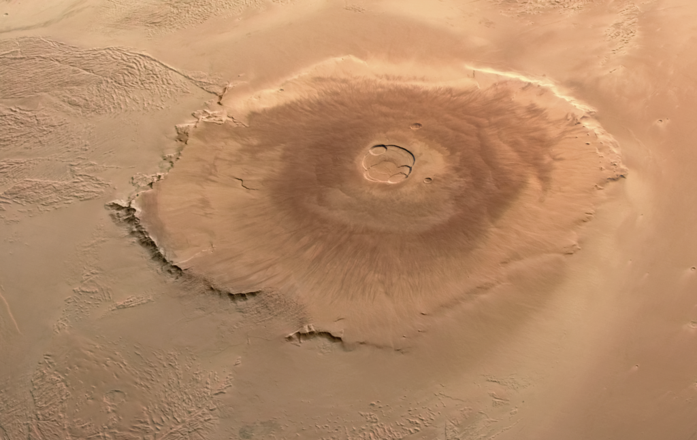

Marte es un mundo frío y desértico. La temperatura media en Marte es de -65 grados Celsius (-85 grados Fahrenheit), muy por debajo del punto de congelación. Marte tiene la mitad del tamaño de la Tierra. A veces es llamado el planeta rojo. Es rojo debido al hierro oxidado de su suelo. Al igual que la Tierra, Marte tiene estaciones del año, casquetes polares, volcanes, cañones y tiempo meteorológico. Tiene una atmósfera muy delgada compuesta principalmente de dióxido de carbono, nitrógeno y argón. Las personas no podrían respirar el aire en Marte.
Hay señales de inundaciones antiguas en Marte, pero ahora el agua existe principalmente en su suelo congelado y en las nubes delgadas. En algunas laderas marcianas, existe evidencia de agua salada líquida en el suelo.Los científicos desean saber si Marte pudo haber tenido seres vivos en el pasado. También quieren saber si Marte podría albergar vida ahora o en el futuro.
Marte es conocido desde la antigüedad porque se puede ver sin telescopios avanzados. El helicóptero de Marte, Ingenuity, realizó con éxito pruebas de vuelo motorizado y controlado en otro mundo por primera vez. Viajó a Marte como pasajero del rover Perseverance y trabajó con el rover para explorar el planeta. Varias misiones han orbitado, aterrizado o volado alrededor de Marte: ¡InSight, MAVEN, el Orbitador de Reconocimiento de Marte (MRO, por sus siglas en inglés), y muchas más! Marte es el único planeta al que hemos enviado vehículos exploradores. Estos conducen alrededor de Marte, tomando fotos y medidas. ¡Descubre más acerca de ellos y de lo que han descubierto haciendo clic en las imágenes a continuación!
Selfies tomadas por el rover Curiosity
Crédito: NASA/JPL-Caltech/MSSS
El Olympus Mons ocupa hoy una superficie similar a la de media península ibérica. Los científicos creen que es tan grande porque la gravedad en Marte es sólo un tercio de la de la Tierra y porque la pluma volcánica que lo creó ha sido muy activa a lo largo de los eones. Marte no tiene placas tectónicas que pudieran haber alejado la montaña de esta fuente de magma, permitiéndole crecer y crecer. Nunca se ha visto entrar en erupción al volcán, pero los estudios sugieren que podrías haberlo hecho hace tan sólo dos millones de años, lo que sugiere que podría volver a entrar en erupción. Visto desde arriba, el Olympus Mons es aproximadamente circular, con vastos cráteres superpuestos de antiguas calderas visibles en su cima, un volcán en escudo construido a partir de capas de lava, como muchas de las islas volcánicas de la Tierra. El escarpe que rodea su base es claramente visible en el noroeste y sureste de la montaña, donde la ladera desciende repentinamente durante varios kilómetros
